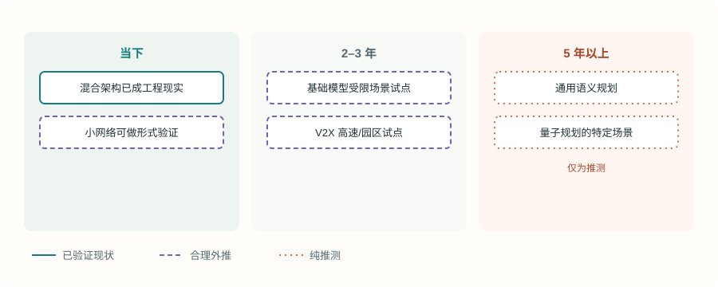
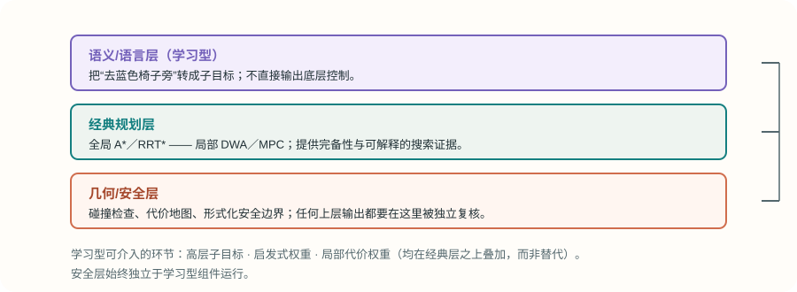

前沿趋势与未来：把“已发生”“可能发生”和“听起来很酷”分开
趋势文章最容易掺水：把已经落地的工程做法、合理的短期外推、以及纯属想象的方向混成一张乐观的图。本章把这三类严格分开——凡是不能指到出处的数字与预测，都明确标注为推测或直接不写。
如何读“趋势”
趋势文章最容易掺水的地方，是混淆三类信息。本章将它们严格分开，并在每一条上标出证据等级：
- 已验证的现状：现在就能在公开文档、论文或产品中看到的做法。例：混合架构已在多处导航栈中出现。
- 合理外推：基于现有证据的短期预测，可能对也可能错，但方向有据可循。例：受限场景里基础模型做高层语义。
- 纯推测：没有任何可靠证据支持，仅因“听起来酷”而流行。例：量子计算很快替代经典规划。
OUTLOOK · 27

下面逐项展开。每一节都会明确它是哪一类——“什么时候能用上”这个问题，比“它有多酷”重要得多。
混合架构：已发生的现实
如果只能记一个趋势，那就是它：“经典 + 学习”的混合架构已经不是学术猜想，而是工程做法。当前大多数实际可用的系统，都是让经典算法负责可解释、可论证的部分（全局搜索、碰撞检查、约束满足），让学习型组件以插件形式参与高层语义、启发式权重或局部代价权重。
OUTLOOK · 27

因此，“该学 A* 还是该学 RL”本身就是一个错问题。更实际的问题是：“在这个系统里，哪些环节值得用数据替换手工设计，哪些环节必须保留可论证的结构？”
基础模型规划器
2022–2023 年，Google 先后推出 RT-1、RT-2 与 PaLM-E 这类工作。它们并不专为路径规划而生，但能在一定程度上完成“理解指令 + 生成动作/子目标”的任务。RT-2 把视觉-语言模型扩展为视觉-语言-动作模型，把动作离散化为 token 与文本一起生成；PaLM-E 则把传感器观测、机器人状态与语言指令统一编码后自回归地生成规划序列。
它们的突出优势是语义理解与常识推理：经典规划器需要你告诉它“餐桌在 (3.2, 5.8)”，而基础模型可能直接从图像里认出餐桌，并“知道”桌子周围通常有椅子、要留出余量。这类能力是人机交互层面的真实增量。
但两个短板同样明确：
- 推理开销大：大规模模型的单次推理往往明显超过常见实时规划周期（数十毫秒级），需要模型压缩、蒸馏或异步执行才能进入控制回路。
- 分布外泛化不可预测：模型在你没见过的场景里会做什么，很难事先界定；它没有经典算法那种可陈述的完备性或最优性保证。
把基础模型的输出当作子目标或建议，而不是底层控制指令，是目前风险最低的用法。让它说“往哪走”，而让经典规划与安全层决定“能不能走、怎么走”.
V2X 协同规划
传统路径规划是“个体视角”：每个智能体只关心自己的路径，再靠交通规则或避碰策略协调。V2X（Vehicle-to-Everything）把范式改成协同规划——智能体之间共享感知、意图与规划，从“各自避让”变成“共同商定”。三个典型场景：
- 协同合流：匝道车与主路车交换速度与位置，联合规划一个穿插动作，避免不必要的减速或停车。
- 队列行驶（Platooning）：多车以极小时距组队，靠 V2V 通信同步加减速；通信延迟直接决定了允许的最小跟车距离。
- 交叉路口协商：无信号灯路口，车辆通过 V2I 交换意图，商定一个安全的通过顺序。
在算法上，问题从单智能体 POMDP 变成多智能体联合 POMDP，状态空间随智能体数呈指数增长。实用方法多采用“分布式共识”：各智能体先独立规划，再通过通信协议迭代一致。这本质上是第 21 章多机器人协调思想的延伸，但在 V2X 场景里多了三重约束：通信延迟（消息到得比决策慢）、信息安全（伪造消息的风险）、以及异构兼容（不同厂商、不同版本）。这些约束意味着“协同”并不能无条件优于“各自避让”。
标准层面，蜂窝车联网由 3GPP 的 C-V2X 系列规范定义（包括直连侧与网络侧）。本章不引用具体的效率提升百分比——这类数字强烈依赖场景与假设，没有统一口径，不应作为跨研究的结论。
安全认证与可解释性
学术 demo 可以不管“能否被证明安全”，但实际部署不行。特别是自动驾驶 L3+ 与医疗机器人，安全认证是硬门槛。两个关键标准是 ISO 26262（功能安全）与 ISO 21448 / SOTIF（预期功能安全，针对“没有故障但功能不足”的风险）。
形式化验证：对经典规划器，可以用模型检测或可达性分析证明“在给定假设下不会产生碰撞路径”。但一旦引入神经网络（哪怕是混合架构里的一小个局部控制器），这种保证就被打破。针对神经网络的验证方法（如基于分支定界的完备验证）能处理的网络规模仍然有限——小规模网络尚可，大型感知网络几乎不可能做完整形式验证。
可解释性（XAI）在规划中的四类做法：
- 特征归因：哪些输入特征对决策影响最大；
- 反事实解释：若改变某个障碍物的位置，决策会变吗；
- 策略蒸馏：用可解释的决策树近似学习型策略；
- 不确定性估计：让模型在没把握时说“不知道”，而不是给一个错答案。
监管上，欧盟《AI 法案》将自动驾驶规划归为高风险 AI 系统，要求可追溯性与人工监督；中国相关指南也要求规划决策“可解释、可验证、可审计”。这已经不是学术趣味，而是法律要求。
若面向真实部署，应从第一天就把可解释性与安全验证设计进去。事后给一个黑箱规划器补形式保证，往往意味着重构，代价很高。
量子计算：先放低预期
这一节明确属于纯推测。路径规划里的组合优化问题（多机器人调度、大规模 TSP 变体）确实与量子优化的目标形式有重叠，但这距离“实用优势”还很远。
两个方向值得了解，但都不该影响你近期的技术选型：
- 量子退火：D-Wave 等设备求解 QUBO（二次无约束二值优化）形式的问题。障碍在于：把路径规划问题编码成 QUBO 本身就是难题，而且编码后再解码回可行路径可能丢失约束。
- 变分量子算法（VQE／QAOA）：更适合含噪的近期设备。QAOA 由 Farhi、Goldstone 与 Gutmann 于 2014 年提出，用于求解组合优化。目前公开结果多为小规模问题，尚不能得出“超过经典启发式”的普遍结论。
诚实的结论是：短期内量子计算不是路径规划工程的可选项；把它当作长期可能的方向观测即可，不要为了“看起来前沿”而把精力押在上面。经典算法在未来很久仍是你的主力工具。
交互：按证据等级过滤
把本章提到的条目按证据等级列在下面。切换按钮，只留下对应等级的条目——这正是你在读任何一篇“趋势”时应做的第一步。
- 混合架构已在多处导航栈中出现
- ROS 2 Nav2 提供 costmap 分层与生命周期管理
- 小规模神经网络可做形式验证
- 基础模型在受限场景做高层语义
- V2X 在高速/园区的试点
- 面向中型网络的验证工具工程化
- 通用语义规划能力
- 量子规划在特定场景实用化
已验证现状：3 项。
边界条件
- 预测不是事实：本章的“合理外推”与“纯推测”都是编辑判断，不是任何机构的路线图；引用时应保留分级标注。
- 厂商/机构的百分比不可横向比较：仿真设置、地图、交通密度不同，“效率提升 X%”没有统一口径，不应作为跨研究结论。
- 混合架构仍需经典验证：学习型组件叠在经典层上，并没有减少碰撞检查与代价地图验证的必要；安全层必须独立于学习组件。
- 标准与法规逐地区而异：ISO 26262／ISO 21448 提供框架，但具体合规要求因地区与产品类别不同，不能一概而论。
- 量子计算当前不可操作：不应作为近期工程选型的依据；它属于“观测”而非“采用”的方向。
读完本章后，你应该能用三个问题审查任何“前沿”说法：它属于哪一证据等级？它能指到什么出处？它在什么假设下成立？答不上来，就当它还没发生。
原始来源
- Brohan et al. (2022), RT-1: Robotics Transformer for Real-World Control at Scale——把机器人控制建成大规模 Transformer 策略的早期工作。
- Brohan et al. (2023), RT-2: Vision-Language-Action Models Transfer Web Knowledge to Robotic Control——把视觉-语言模型扩展为视觉-语言-动作模型。
- Driess et al. (2023), PaLM-E: An Embodied Multimodal Language Model——多模态具身语言模型。
- Farhi, Goldstone & Gutmann (2014), A Quantum Approximate Optimization Algorithm——QAOA 的原始工作。
- ISO 26262（功能安全）与 ISO 21448／SOTIF（预期功能安全）——安全认证框架，版本以 ISO 官方页面为准。
- 3GPP C-V2X 系列规范——蜂窝车联网直连侧与网络侧标准。
- 本章的趋势分级、两幅图与交互均为教学编辑，不对应任何官方预测。